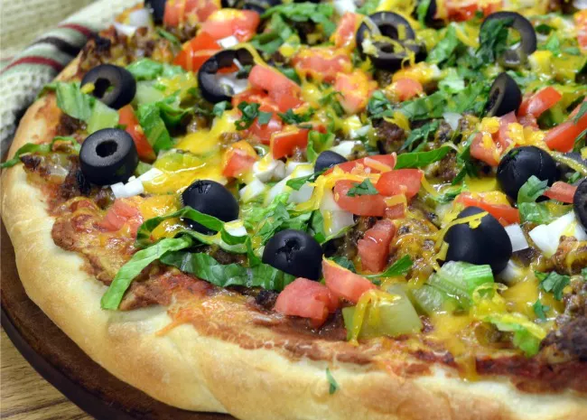

Pizza

Pizza is a traditional italian dish that consists of a flat dough with toppings. The simplest pizza have
tomato sauce and cheese, while it is possible to ad lots of toppings.
Ingredients
- Flour
- Yeast
- Water
- Olive oil
- Muzarella
- Tomato Sauce
Steps
- Mix the flour, yeast, water and olive oil to make the doug. Let it rest for an hour or until
it has doubled in size.
- Strech the dough on a roasting pan and put some tomato sauce on tom. Afterwards add the cheese.
- Bake until the dough gets brownish and the cheese melts.